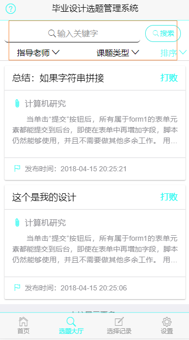
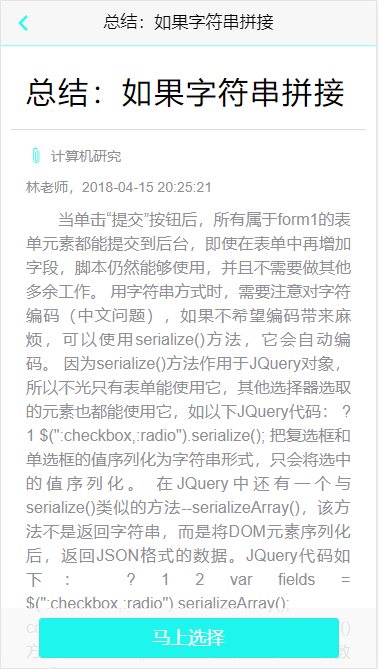
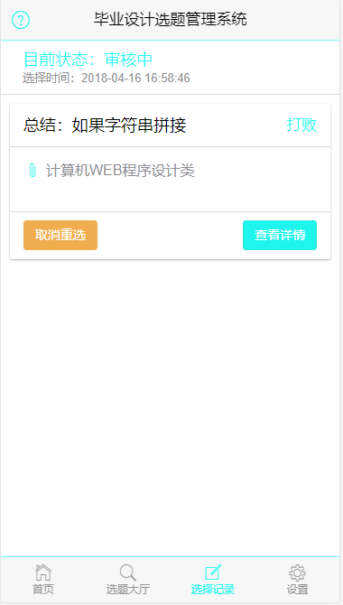

毕业设计选题管理系统使用介绍
随着Internet的飞速发展及互联网的普及，计算机已广泛用于政府、军事、科研、商业等部门，连接到千家万户，利用计算机实现毕业设计管理势在必行。 目前高校基本都采用网站的形式管理学生的毕业设计。 本系统主要分为三个模块：学生模块、教师模块和管理员模块。
学生用户操做
1、首先到选题大厅找寻想要选择的课题，这边可以根据关键词，教师，课题类型等来过滤课题：
 2、点击进入详情，可以查看详细的信息，并且可以选择想要选的课题：
 3、选择后可以到选择记录哪边查看你选择状态，再教师未审核前可以取消选题，到此就选择完成了：
